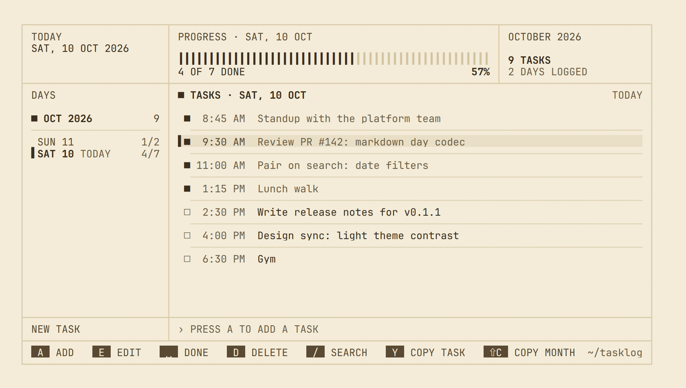
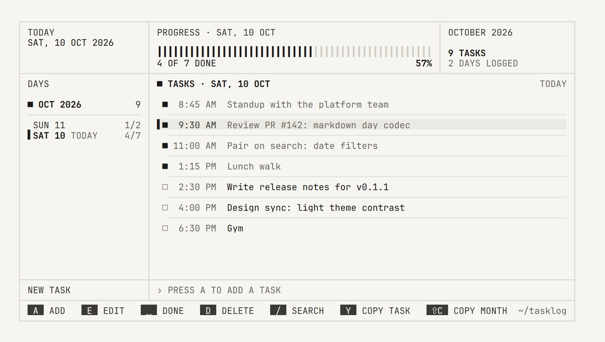
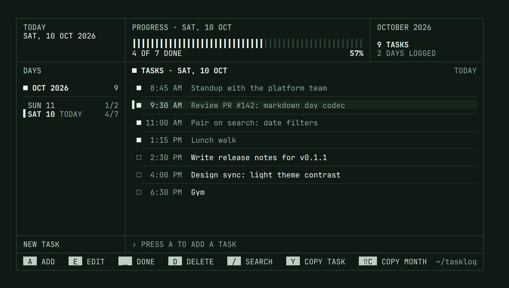
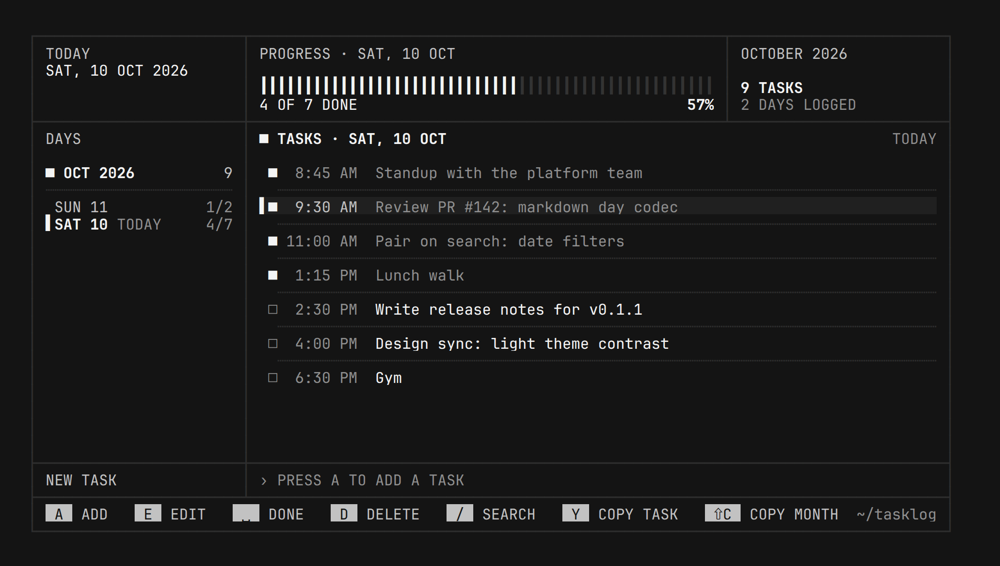

A
ADD
␣
DONE
/
FIND
tasklog
Your day, written down
as you go.
A task log for the terminal. Every task is a line of markdown in a folder you own.
❯
bunx @piyus/tasklog
try once
❯
npm i -g @piyus/tasklog
install